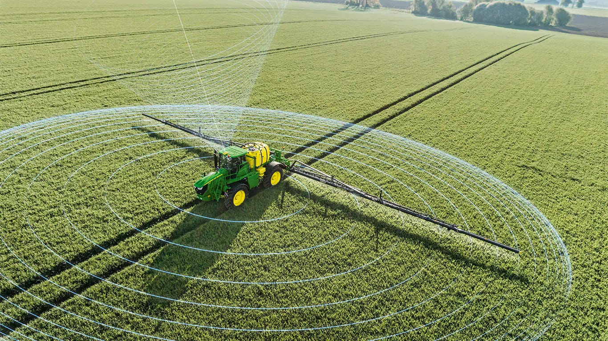
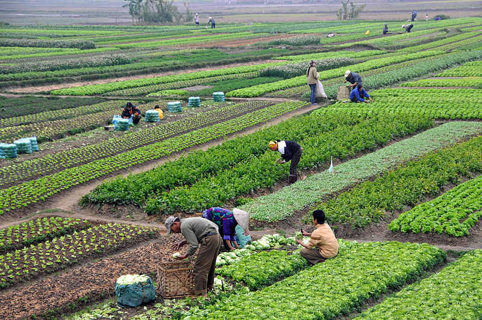
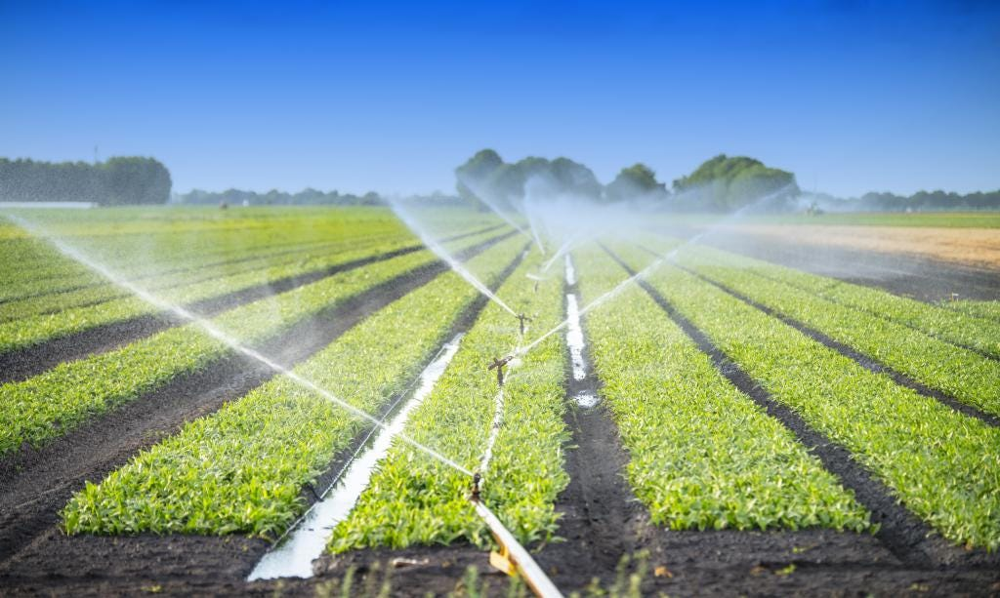
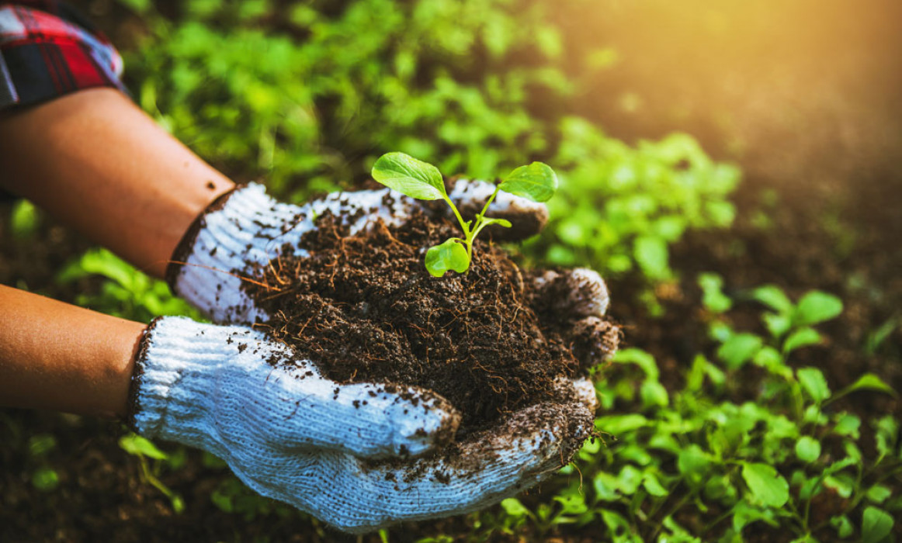
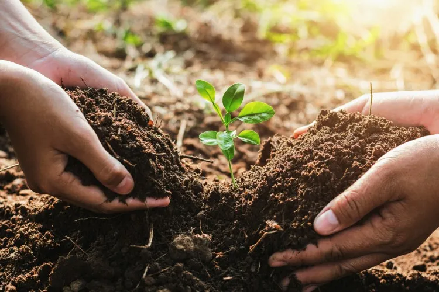
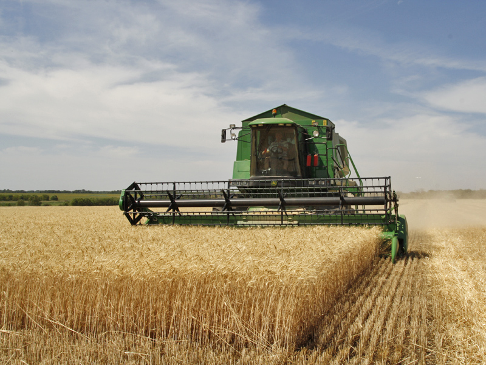
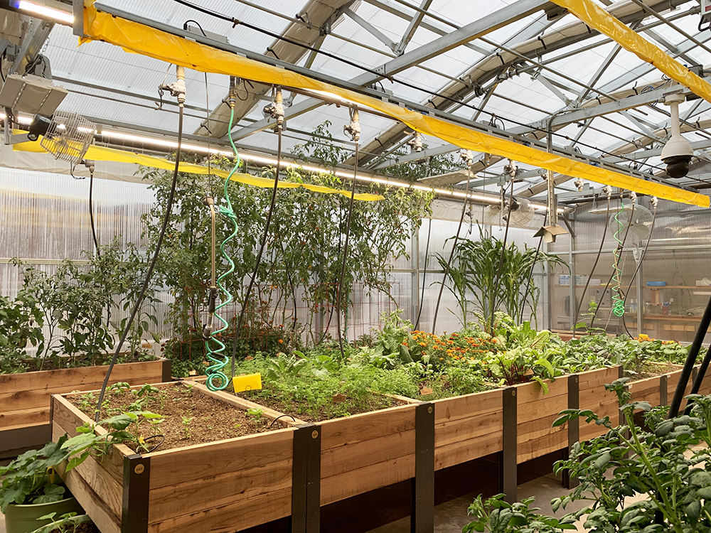
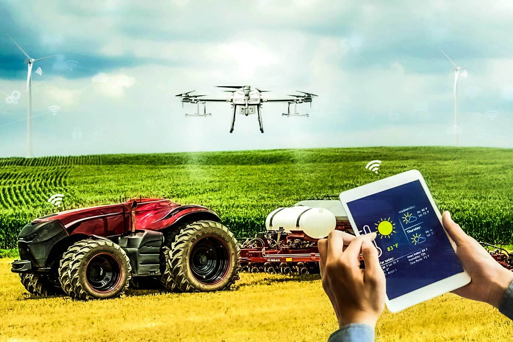
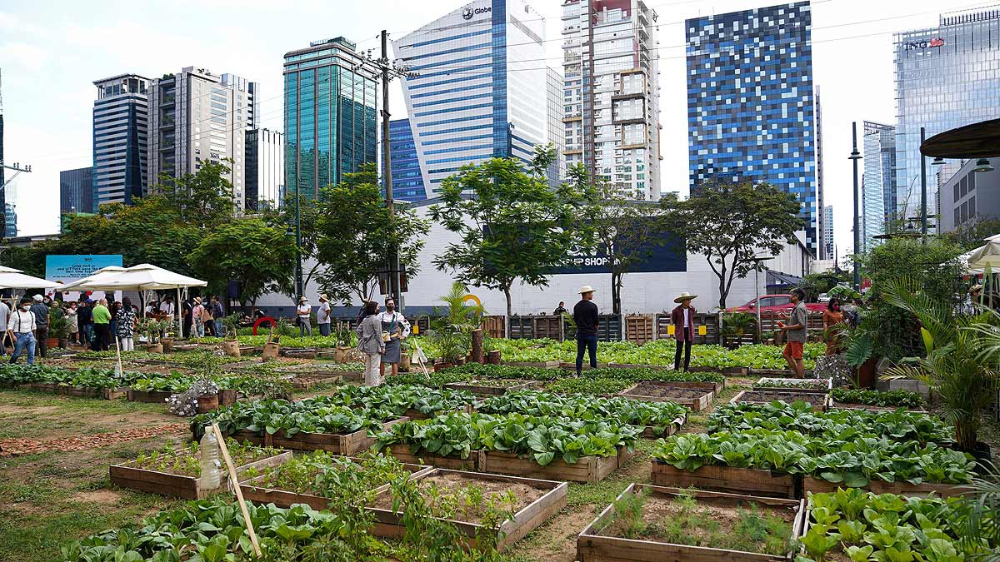

Your browser does not support the video tag.
Agriculture Hub Gallery

Modern Farming

Sustainable Agriculture

Innovative Irrigation

Organic Farming

Soil Conservation

Harvesting

Greenhouse Techniques

Tech in Agriculture

Community Farming